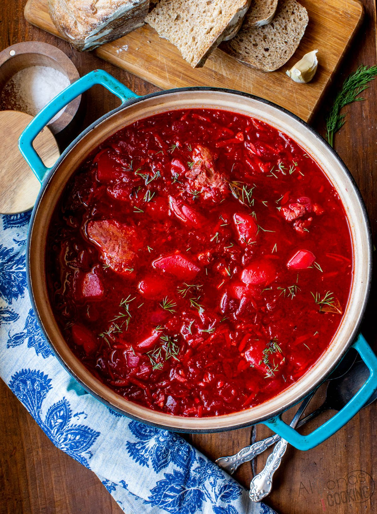

Syrniki recipe

Description
Here’s a simple recipe for Borscht (Russian Beet Soup):
- 2 medium beets, peeled and grated
- 1 carrot, peeled and grated
- 1 onion, chopped
- 2 potatoes, peeled and diced
- 1/4 cabbage, shredded
- 2 cloves garlic, minced
- 2 tbsp tomato paste
- 1 tbsp vinegar
- 1 bay leaf
- Salt and pepper to taste
- 1-2 tbsp oil (for frying)
- Fresh dill (for garnish)
- Sour cream (for serving)
Steps
- In a large pot, bring water or broth to a boil.
- Heat oil in a pan and sauté onions, beets, and carrots for about 5 minutes. Add tomato paste and vinegar, cook for another 3 minutes.
- Add potatoes and cabbage to the boiling water, then add the sautéed vegetables and bay leaf. Simmer for 20–25 minutes until the vegetables are tender.
- Season with salt and pepper to taste. Remove the bay leaf.
- Serve hot, garnished with fresh dill and a dollop of sour cream.
Enjoy these traditional dishes!